Emeria decks typically run well with 22-25 lands, depending on the style (a green/white list would run less because it has ramp, while a blue/white list
would run more due to it's control aspects). The main problem with making a three-colored Emeria deck is the mana base. You need to be able to get all
of your colors, while not interfering with the number of plains to let Emeria trigger. This can be a major deckbuilding restriction because it means that a classic
fetch/shock/fast land mana base won't cut it. With that said, this is my Bant Emeria mana base:
This list is running 23 lands. There are only four fetchlands; 2 each of Windswept Heath and Flooded Strand. There is no need for shock lands because
the battle lands are even better with the amount of basics we are running. Because Bant is a shard, it has two potential battle lands, and we are running 2
Prairie Stream and 1 Canopy Vista. The bicycle lands from Amonkhet are helpful because along with being able to be fetched up, they can be cycled
only to be recurred with a Renegade Rallier or a Sun Titan. Those creatures could also get back Ghost Quarters, which after enough grinding can lead
to them becoming strip mines against most modern decks. Since we are in three colors, we are only running two Ghost Quarters, but in two or even
mono-white colors, a playset is usually played.
 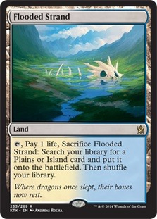
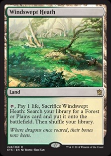
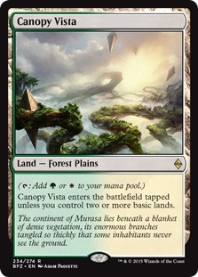
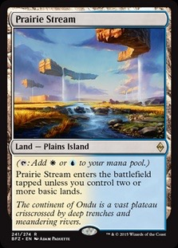
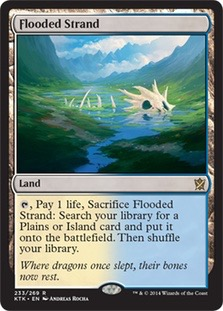
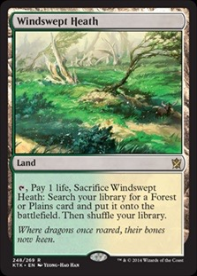
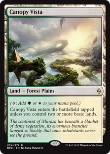
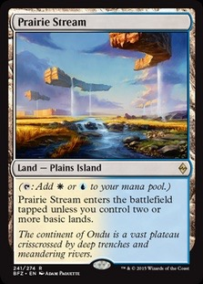
 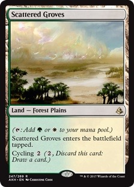
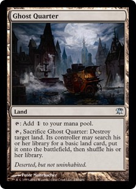
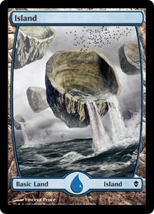
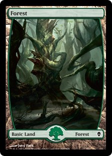
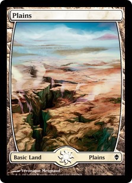
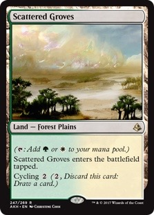
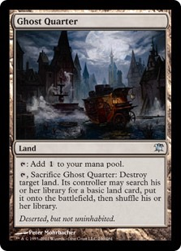
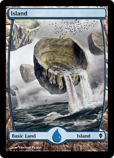
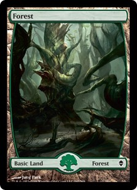
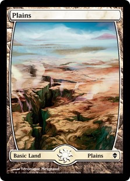